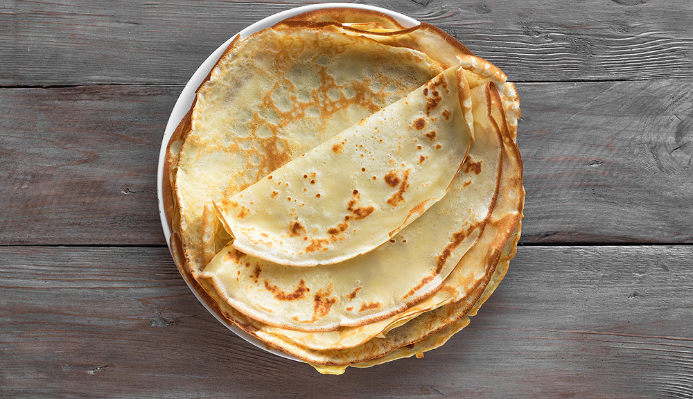

Description : Comment faire des crêpes
Ingrédients
- Farine
- Lait
- OEufs
- Sucre vanillé
- sel
- Sucre en poudre
Préparation :
- Dans un saladier, mélangez la farine, le sel et le sucre en poudre. Creusez ensuite un puits pour y casser les œufs. Mélangez en effectuant des cercles du centre vers l’extérieur. Versez ensuite le lait petit à petit, puis ajoutez le sucre vanillé. Laissez reposer 30 min.
- Avec un coton, badigeonnez d’huile le fond de votre crêpière et faites-la chauffer à feu vif. Une fois bien chaude, versez-y une louche de pâte et laissez cuire 3 min de chaque côté. Procédez ainsi jusqu’à épuisement de la pâte.
- Empilez les crêpes sur une assiette, en les recouvrant éventuellement d’un torchon propre pour les conserver au chaud !